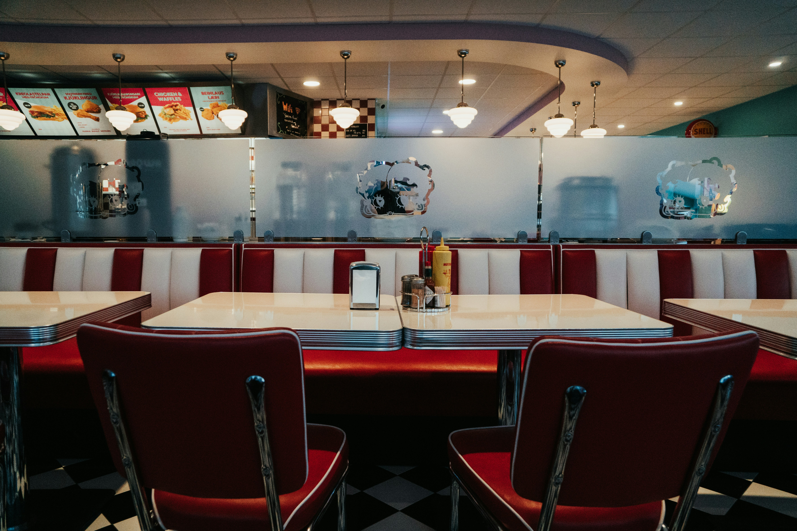
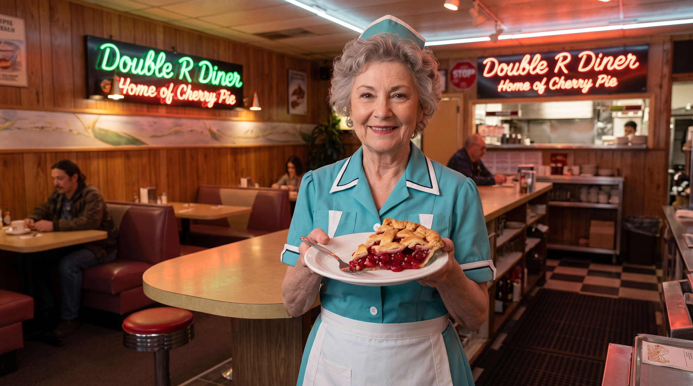
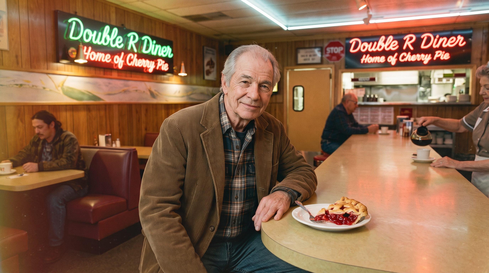
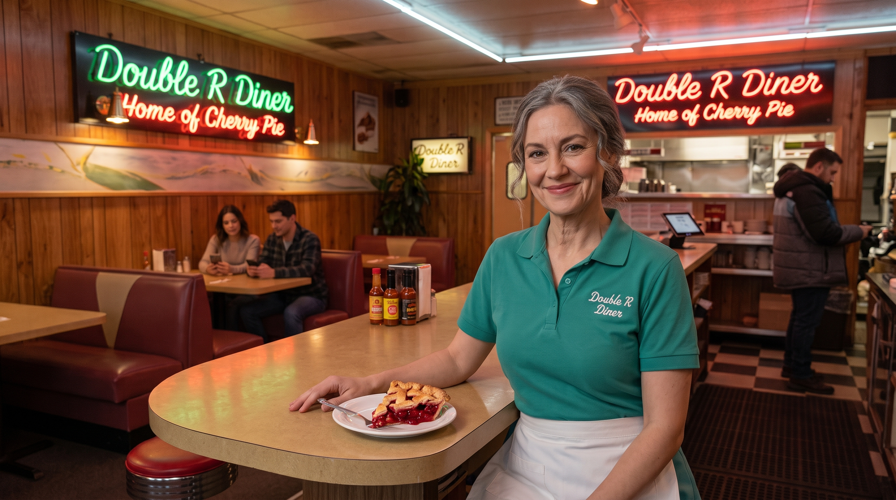

About the Double R
From our family to yours, since 1969.
Our story
Our diner wasn't always known as the Double R diner. In fact, it was first known as the ‘Railroad Diner’ before briefly being named ‘Marty’s Railroad Café’ before becoming The Double R Diner, and a local institution. Opened by the father & daughter duo of Marty Lindstrom & Norma Jennings in 1969, it has always been open every day of the week (including holidays), only shutting for Christmas! In our time we’ve served “damn good” coffee, contributed to the Meals on Wheels and sponsored the Miss Twin Peaks Contest.
Very little has changed since 1969. The booths are all still the originals (although reupholstered more times than we can count!). The counter is still the same one that Norma has stood behind all these years. The griddle has needed replacing twice, though Norma maintains that is twice too many.
Norma still runs the Double R Diner to this day. She still arrives at 06:00 to get the coffee on so a “damn good” coffee is on offer whenever anyone might need it.

What we’re known for
Cherry pie and a damn fine cup of coffe, always in that order. The pies here are made fresh every morning, and there are always five kinds on the counter to choose from. People have come from all across america for a slice of our pie, and we’re always happy to serve!
See the full menuThe people behind the institution

Norma Jennings
Owner
Marty Lindstrom’s daughter Norma, runs the place still, works as many shifts as she can and still makes the pies herself.

Marty Lindstrom
Owner
Norma Jenning’s father Marty, sadly no longer with us. Norma keeps the place going in his honour.

Annie Blackburn
Manager
Norma Jenning’s half-sister Annie, still helping Norma keep the Diner going.
A lounge for the whole town
The Double R Diner has always been a place where Twin Peaks comes together to meet friends and family. The long counter takes up to nine people, the booths each take four people each, and we have two tables at the back that we can push together for up to a dozen if needed. Birthdays, wakes, committee meetings and increasingly divorce parties, as well as the odd unofficial town hall meeting, have all happened here at the Double R Diner!
For groups of eight or more, give us a call so that we can put the tables together before you arrive.
Get in touch